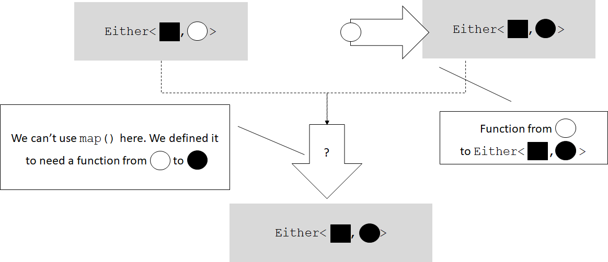
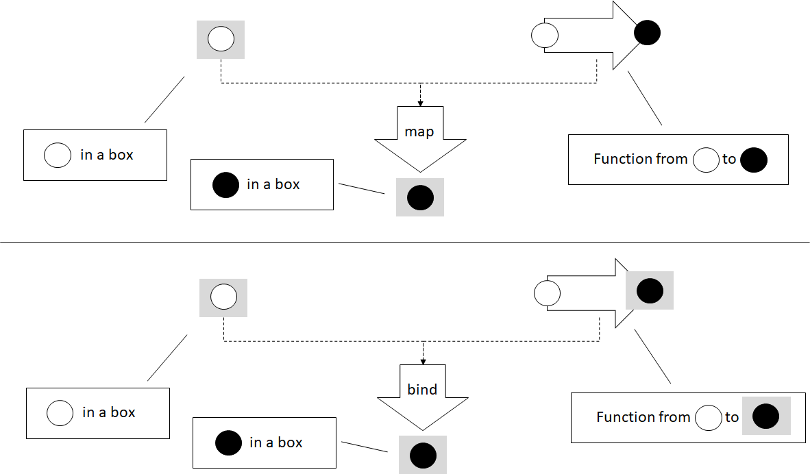
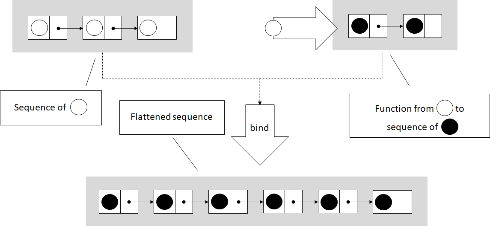

Higher Kinded Types: Monads
This blog post is an excerpt from my book, Programming with Types. The code samples are in TypeScript. If you enjoy the article, you can use the discount code vlri40 for a 40% discount on the book.
Make sure to read the previous post first, Higher Kinded Types: Functors.
Monads
You have probably heard the term monad, as it's been getting a lot of attention lately. Monads are making their way into mainstream programming, so you should know one when you see it. Building on the previous blog post, in this post we will explain what a monad is and how it is useful. We'll start with a few examples and then look at the general definition.
Result or Error
In the previous post, we had a readNumber() function that returned
number | undefined. We used functors to sequence processing with
square() and stringify(), so that if readNumber() returns
undefined, no processing happens, and the undefined is propagated
through the pipeline.
This type of sequencing works with functors as long as only the first
function - in this case, readNumber() - can return an error. But what
happens if any of the functions we want to chain can error out? Let's
say that we want to open a file, read its content as a string, and
then deserialize that string into a Cat object.
We have an openFile() function that returns an Error or a
FileHandle. Errors can occur if the file doesn't exist, if it is
locked by another process, or if the user doesn't have permission to
open it. If the operation succeeds, we get back a handle to the file.
We have a readFile() function that takes a FileHandle and returns
ether an Error or a string. Errors can occur if the file can't be
read, perhaps due to being too large to fit in memory. If the file can
be read, we get back a string.
Finally, deserializeCat() function takes a string and returns an
Error or a Cat instance. Errors can occur if the string can't be
deserialized into a Cat object, perhaps due to missing properties.
All these functions follow the return result or error
pattern, which
suggests returning either a valid result or an error from a function,
but not both. The return type will be an Either<Error, ...>:
declare function openFile(
path: string): Either<Error, FileHandle>;
declare function readFile(
handle: FileHandle): Either<Error, string>;
declare function deserializeCat(
serializedCat: string): Either<Error, Cat>;
We are omitting the implementations, as they are not important. Let's
also quickly see the implementation of Either:
class Either<TLeft, TRight> {
private readonly value: TLeft | TRight;
private readonly left: boolean;
private constructor(value: TLeft | TRight, left: boolean) {
this.value = value;
this.left = left;
}
isLeft(): boolean {
return this.left;
}
getLeft(): TLeft {
if (!this.isLeft()) throw new Error();
return <TLeft>this.value;
}
isRight(): boolean {
return !this.left;
}
getRight(): TRight {
if (this.isRight()) throw new Error();
return <TRight>this.value;
}
static makeLeft<TLeft, TRight>(value: TLeft) {
return new Either<TLeft, TRight>(value, true);
}
static makeRight<TLeft, TRight>(value: TRight) {
return new Either<TLeft, TRight>(value, false);
}
}
The type wraps a value of either TLeft or TRight and a flag to keep
track of that type is used. It has a private constructor, as we need to
make sure that the value and boolean flag are in sync. Attempting to get
a TLeft when we have a TRight, or vice versa, throws an error. The
factory functions call the constructor and ensure that the boolean flag
is consistent with the value.
Now let's see how we could chain these functions together into a
readCatFromFile() function that takes a file path as an argument and
returns an Error if anything went wrong along the way, or a Cat
instance:
function readCatFromFile(path: string): Either<Error, Cat> {
let handle: Either<Error, FileHandle> = openFile(path);
if (handle.isLeft()) return Either.makeLeft(handle.getLeft());
let content: Either<Error, string> = readFile(handle.getRight());
if (content.isLeft()) return Either.makeLeft(content.getLeft());
return deserializeCat(content.getRight());
}
This function is very similar to the first implementation of process()
in the previous blog post. There, we provided an updated implementation
that removed all the branching and error checking from the function and
delegated those tasks to map(). Let's see what a map() for
Either<TLeft, TRight> would look like. We will follow the convention
Right is right; left is error
, which means that TLeft contains an
error, so map() will just propagate it. map() will apply a given
function only if the Either contains a TRight:
namespace Either {
export function map<TLeft, TRight, URight>(
value: Either<TLeft, TRight>,
func: (value: TRight) => URight): Either<TLeft, URight> {
if (value.isLeft()) return Either.makeLeft(value.getLeft());
return Either.makeRight(func(value.getRight()));
}
}
There is a problem with using map(), though: the types of the
functions it expects as argument is incompatible with the functions we
are using. With map(), after we call openFile() and get back an
Either<Error, FileHandle>, we would need a function
(value: FileHandle) => string to read its content. That function can't
itself return an Error, like square() or stringify(). But in our
case, readFile() itself can fail, so it doesn't return string, it
returns Either<Error, string>. If we attempt to use it in our
readCatFromFile(), we get a compilation error:
function readCatFromFile(path: string): Either<Error, Cat> {
let handle: Either<Error, FileHandle> = openFile(path);
let content: Either<Error, string> = Either.map(handle, readFile);
/* ... */
}
This fails to compile due to a type mismatch. The error message we get is
Type 'Either<Error, Either<Error, string>>' is not assignable to type 'Either<Error, string>'.
Our functor falls short here. Functors can propagate an initial error
through the processing pipeline, but if every step in the pipeline can
fail, functors no longer work. In the following figure, the black square
represents an Error, and the white and black circles represent two
types, such as FileHandle and string.

We can't use a functor in this case because the functor is defined to
map a function from a white circle to a black circle. Unfortunately, our
function returns a type already wrapped in an Either (an
Either<black square, black circle>). We need an alternative to map()
that can deal with this type of function.
map() from Either<Error, FileHandle> would need a function from
FileHandle to string to produce an Either<Error, string>. Our
readFile() function, on the other hand, is from FileHandle to
Either<Error, string>.
This problem is easy to fix. We need a function similar to map() that
goes from T to Either<Error, U>. The standard name for such a
function is bind():
namespace Either {
export function bind<TLeft, TRight, URight>(
value: Either<TLeft, TRight>,
func: (value: TRight) => Either<TLeft, URight>
): Either<TLeft, URight> {
if (value.isLeft()) return Either.makeLeft(value.getLeft());
return func(value.getRight());
}
}
func() has a different type from the func() in map(). We can
simply return the result of func(), as it has the same type as the
result of bind().
As we can see, the implementation is even simpler than the one for
map(): after we unpack the value, we simply return the result of
applying func() to it. Let's use bind() to implement our
readCatFromFile() function and get the desired branchless error
propagation behavior:
function readCatFromFile(path: string): Either<Error, Cat> {
let handle: Either<Error, FileHandle> = openFile(path)
let content: Either<Error, string> =
Either.bind(handle, readFile);
return Either.bind(content, deserializeCat);
}
Unlike the map() version, this code works. Applying readFile() to
handle gives us back an Either<Error, string>. deserializeCat()
has the same return type as readCatFromFile(), so we simply return the
result of bind().
This version seamlessly chains together openFile(), readFile(), and
deserializeCat() so that if any of the functions fails, the error gets
propagated as the result of readCatFromFile(). Again, branching is
encapsulated in the bind() implementation, so our processing function
is linear.
Difference between map() and bind()
Before moving on to define monads, let's take another simplified example
and contrast map() and bind(). We'll again use Box<T>, a generic
type that simply wraps a value of type T. Although this type is not
particularly useful, it is the simplest generic type we can have. We
want to focus on how map() and bind() work with values of types T
and U in some generic context, such as Box<T>, Box<U> (or T[],
U[]; or Optional<T>, Optional<U>; or Either<Error, T>,
Either<Error, U> etc.).
For a Box<T>, a functor (map()) takes a Box<T> and a function from
T to U and returns a Box<U>. The problem is that we have scenarios
in which our functions are directly from T to Box<U>. This is what
bind() is for. bind() takes a Box<T> and a function from T to
Box<U> and returns the result of applying the function to the T
inside Box<T>.

If we have a function stringify() that takes a number and returns
its string representation, we can map() it on a Box<number> and
get back a Box<string>:
namespace Box {
export function map<T, U>(
box: Box<T>,
func: (value: T) => U): Box<U> {
return new Box<U>(func(box.value));
}
}
function stringify(value: number): string {
return value.toString();
}
const s: Box<string>
= Box.map(new Box(42), stringify);
If instead of stringify(), which goes from number to string, we
have a boxify() function that goes from number directly to
Box<string>[, ]{.title-ref}[map()]{.title-ref}[ won't work. We'll need
]{.title-ref}[bind()]{.title-ref}` instead:
namespace Box {
export function bind<T, U>(
box: Box<T>,
func: (value: T) => Box<U>): Box<U> {
return func(box.value);
}
}
function boxify(value: number): Box<string> {
return new Box(value.toString());
}
const b: Box<string> =
Box.bind(new Box(42), boxify);
The result of both map() and bind() is still a Box<string>. We
still go from Box<T> to Box<U>; the difference is how we get there.
In the map() case, we need a function from T to U. In the bind()
case, we need a function from T to Box<U>.
The Monad Pattern
A monad consists of bind() and one more, simpler function. This other
function takes a type T and wraps it into the generic type, such as
Box<T>, T[], Optional<T>, or Either<Error, T>. This function is
usually called return() or unit().
A monad allows structuring programs generically while encapsulating away boilerplate code needed by the program logic. With monads, a sequence of function calls can be expressed as a pipeline that abstracts away data management, control flow, or side effects.
Let's look at a few examples of monads. We can start with our simple
Box<T> type and add unit() to it to complete the monad:
namespace Box {
export function unit<T>(value: T): Box<T> {
return new Box(value);
}
export function bind<T, U>(
box: Box<T>,
func: (value: T) => Box<U>): Box<U> {
return func(box.value);
}
}
unit() simply calls Box's constructor to wrap the given value into
an instance of Box<T>. bind() unpacks the value from Box and calls
func() on it.
The implementation is very straightforward. Let's look at the
Optional<T> monad functions:
namespace Optional {
export function unit<T>(value: T): Optional<T> {
return new Optional(value);
}
export function bind<T, U>(
optional: Optional<T>,
func: (value: T) => Optional<U>): Optional<U> {
if (!optional.hasValue()) return new Optional();
return func(optional.getValue());
}
}
unit() takes a value of type T and wraps it into an Optional<T>.
If the optional is empty, bind() returns an empty optional of type
Optional<U>. If the optional contains a value, bind() return the
result of calling func() on it.
Very much as with functors, if a programming language can't express
higher kinded types, we don't have a good way to specify a Monad
interface. Instead, let's think of monads as a pattern:
A monad is a generic type
H<T>for which we have a function likeunit(), that takes a value of typeTand returns a value of typeH<T>, and a function likebind()that takes a value of typeH<T>and a function fromTtoH<U>, and returns a value of typeH<U>.
Bear in mind that because most languages use this pattern, without a way
to specify an interface for the compiler to check, in many instances the
two functions, unit() and bind(), may show up under different names.
You may hear the term monadic, as in monadic error handling, which
means that error handling follows the monad pattern.
Next, we'll look at a few other examples.
The Continuation Monad
A promise represents the result of a computation that will happen
sometime in the future. Promise<T> is the promise of a value of type
T. We can schedule execution of asynchronous code by chaining
promises, using the then() function.
Let's say we have a function that determines our location on the map.
Because this function will work with the GPS, it may take longer to
finish, so we make it asynchronous. It will return a promise of type
Promise<Location>. Next, we have a function that, given a location,
will contact a ride-sharing service to get us a Car:
declare function getLocation(): Promise<Location>;
declare function hailRideshare(
location: Location): Promise<Car>;
let car: Promise<Car> = getLocation().then(hailRideshare);
When getLocation() returns, hailRideshare() will be invoked with its
result. This should look very familiar to you at this point. then() is
just how Promise<T> spells bind()!
we can also create an instantly resolved promise by using
Promise.resolve(). This takes a value and returns a resolved promise
containing that value, which is the Promise<T> equivalent of unit().
Turns out chaining promises, an API available in virtually all mainstream programming languages, is monadic. It follows the same pattern that we saw in this section, but in a different domain. While dealing with error propagation, our monad encapsulated checking whether we have a value that we can continue operating on or have an error that we should propagate. With promises, the monad encapsulates the intricacies of scheduling and resuming execution. The pattern is the same, though.
The List Monad
Another commonly used monad is the list monad. Let's look at an
implementation over sequences: a divisors() function that takes a
number n and returns an array containing all of its divisors except 1
and n itself.
This straightforward implementation starts from 2 and goes up to half of n, and adds all numbers it finds that divide n without a remainder. There are more efficient ways to find all divisors of a number, but we'll stick to a simple algorithm in this case:
function divisors(n: number): number[] {
let result: number[] = [];
for (let i = 2; i <= n / 2; i++) {
if (n % i == 0) {
result.push(i);
}
}
return result;
}
Now let's say we want to take an array of numbers and return an array
containing all their divisors. We don't need to worry about dupes. One
way to do this is to provide a function that takes an array of input
numbers, applies divisors() to each of them, and joins the results of
all the calls to divisors() into a final result:
function allDivisors(ns: number[]): number[] {
let result: number[] = [];
for (const n of ns) {
result = result.concat(divisors(n));
}
return result;
}
It turns out that this pattern is common. Let's say that we have another
function, anagrams(), that generates all permutations of a string and
returns an array of strings. If we want to get the set of all anagrams
of an array of strings, we would end up implementing a very similar
function:
declare function anagram(input: string): string[];
function allAnagrams(inputs: string[]): string[] {
let result: string[] = [];
for (const input of inputs) {
result = result.concat(anagram(input));
}
return result;
}
allAnagrams() is very similar to allDivisors().
Now let's see whether we can replace allDivisors() and allAnagrams()
with a generic function. This function would take an array of Ts and a
function from T to an array of Us, and return an array of Us:
function bind<T, U>(
inputs: T[],
func: (value: T) => U[]): U[] {
let result: U[] = [];
for (const input of inputs) {
result = result.concat(func(input));
}
return result;
}
function allDivisors(ns: number[]): number[] {
return bind(ns, divisors);
}
function allAnagrams(inputs: string[]): string[] {
return bind(inputs, anagram);
}
As you've probably guessed, this is the bind() implementation for the
list monad. In the case of lists, bind() flattens the arrays returned
by each call of the given function into a single array. While the
error-propagating monad decides whether to propagate an error or apply a
function and the continuation monad wraps scheduling, the list monad
combines a set of results (a list of lists) into a single flat list. In
this case, the box is a sequence of values.

The unit() implementation is trivial. Given a value of type T, it
returns a list containing just that value. This monad generalizes to all
kinds of lists: arrays, linked lists, and iterator ranges.
Category theory
Functors and monads come from category theory, a branch of mathematics that deals with structures consisting of objects and arrows between these objects. With these small building blocks, we can build up structures such as functors and monads. We won't go into its details now; we'll just say that multiple domains, like set theory and even type systems, can be expressed in category theory.
Haskell is a programming language that took a lot of inspiration from category theory, so its syntax and standard library make it easy to express concepts such as functors, monads, and other structures. Haskell fully supports higher kinded types.
Maybe because the building blocks of category theory are so simple, the abstractions we've been talking about are applicable across so many domains. We just saw that monads are useful in the context of error propagation, asynchronous code, and sequence processing.
Although most mainstream languages still treat monads as patterns instead of proper constructs, they are definitely useful structures that show up over and over in different contexts.
Other Monads
A couple of other common monads, which are popular in functional programming languages with pure functions (functions that don't have side effects) and immutable data, are the state monad and the IO monad. We'll provide only a high-level overview of these monads, but if you decide to learn a functional programming language such as Haskell, you will likely encounter them early in your journey.
The state monad encapsulates a piece of state that it passes along with
a value. This monad enables us to write pure functions that, given a
current state, produce a value and an updated state. Chaining these
together with bind() allows us to propagate and update state through a
pipeline without explicitly storing it in a variable, enabling purely
functional code to process and update state.
The IO monad encapsulates side effects. It allows us to implement pure functions that can still read user input or write to a file or terminal because the impure behavior is removed from the function and wrapped in the IO monad.